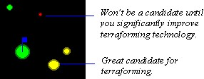
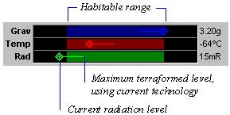

Terraforming
More General Planet Topics
Playing Stars!
Terraforming is the ability to change a planet's environment to make it more habitable for your race. If you are immune to environmental conditions, you don't need to terraform.
To see your race's habitability range, choose the View (Race) menu item, then turn to page 4 of the View Race dialog.
You won't know if you need to terraform or can terraform a planet unless you can scan it, gathering information about the planet's environment. To see all terraformable planets you've found use the Scanner pane's Planet Value view. You possess the technology to terraform Yellow planets, making them habitable. Most green planets can also be terraformed to improve them. The larger the yellow dot, the better the planet will be once you terraform it:

Click on a planet in the Scanner pane, then look in the Selection Summary pane. The habitability value shows the current value of the planet followed in parentheses by the value the planet would be after terraforming (given the limits of your current technology). The environment graph shows how much you can modify the planet's environment, given your level of terraforming technology. The following graph shows that the player possesses Gravity, Temperature and Radiation terraforming technology, and that Radiation must be terraformed to make the planet habitable. Gravity is right at the edge of this race's habitable range, and should be terraformed at least a small percentage. Terraforming the Temperature will improve conditions even more.

You don't have to worry about the order in which the different factors are terraformed. The terraforming task that appears in the production dialog always works on the factor that is the furthest out of range. If you can improve Gravity by 3%, Temperature by 5% and Radiation by 2% the Production dialog will let you add 10% Terraforming to the queue. Each 1% Terraforming task executed will modify one of the environmental factors by 1%, which will improve the overall habitability value by at least 1% and probably more.
Find out which factor should be terraformed to maximize the planet's habitability value by clicking in the environment graph of the Summary pane. A pop-up will tell you the potential increase in habitability value if you modify that factor to the limits of your current technology.
Colonists Die if Minimum Terraforming Lasts more than One Year
If it takes longer than one year after colonizing to bring the planet to a Habitability value of 0% or better, your colonists will start to die. If you can bring it within range the first year, they'll be fine. This is the best reason for creating a production template that contains auto-build terraforming tasks.
Read more about Terraforming:
How to Terraform
Types of Terraforming Technology
Total Terraforming
Claim Adjusters and Terraforming other Player's Planets from Orbit